![]()
### load packages
library(rhdf5) # provides functions for handling hdf5 file formats (kallisto outputs bootstraps in this format)
library(tidyverse) # Hadley Wickham's collection of R packages for data science, which we will use throughout the course
library(tximport) # package for getting Kallisto results into R
library(ensembldb) # helps deal with ensembl
library(EnsDb.Hsapiens.v86) # replace with your organism-specific database package
library(here) # file path
library(datapasta) # paste data into R from clipboard
library(edgeR) # well known package for differential expression analysis, but we only use for the DGEList object and for normalization methods
library(matrixStats) # easily calculate stats on rows or columns of a data matrix
library(cowplot) # allows you to combine multiple plots in one figure
library(DT) # for making interactive tables
library(plotly) # for making interactive plots
library(gt) # A layered 'grammar of tables' - think ggplot, but for tables
library(limma) # venerable package for differential gene expression using linear modeling
library(edgeR)
library(RColorBrewer) # need colors to make heatmaps
# library(gameofthrones) #because...why not. Install using 'devtools::install_github("aljrico/gameofthrones")'
library(heatmaply) #for making interactive heatmaps using plotly
library(gplots)
# library(d3heatmap) # for making interactive heatmaps using D3
library(GSEABase) # functions and methods for Gene Set Enrichment Analysis
library(Biobase) # base functions for bioconductor; required by GSEABase
library(GSVA) # Gene Set Variation Analysis, a non-parametric and unsupervised method for estimating variation of gene set enrichment across samples.
library(gprofiler2) # tools for accessing the GO enrichment results using g:Profiler web resources
library(clusterProfiler) # provides a suite of tools for functional enrichment analysis
library(msigdbr) # access to msigdb collections directly within R
library(enrichplot) # great for making the standard GSEA enrichment plots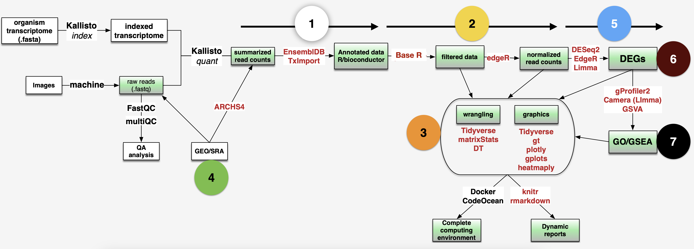
Step1: Check the quality of raw reads
### go to row reads folder
cd ~/../..DIY_Transcriptomics/data/fastq
### activate env
conda active rnaseq
### use fastqc to check the quality of fastq files
fastqc *.gz -t 4Step2: Mapping reads with Kallisto pseudoaligment
Download reference transciptome files from here
Build an index from reference fasta file
kallisto index -i Homo_sapiens.GRCh38.cdna.all.index Homo_sapiens.GRCh38.cdna.all.fa.gz- Map reads to the indexed reference host transcriptome
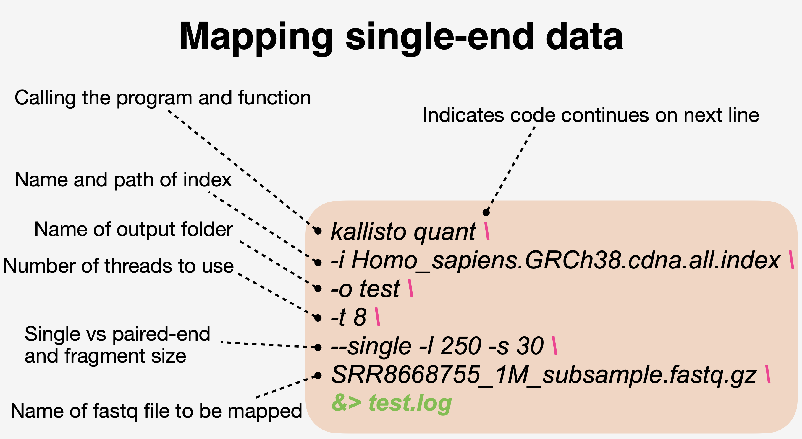
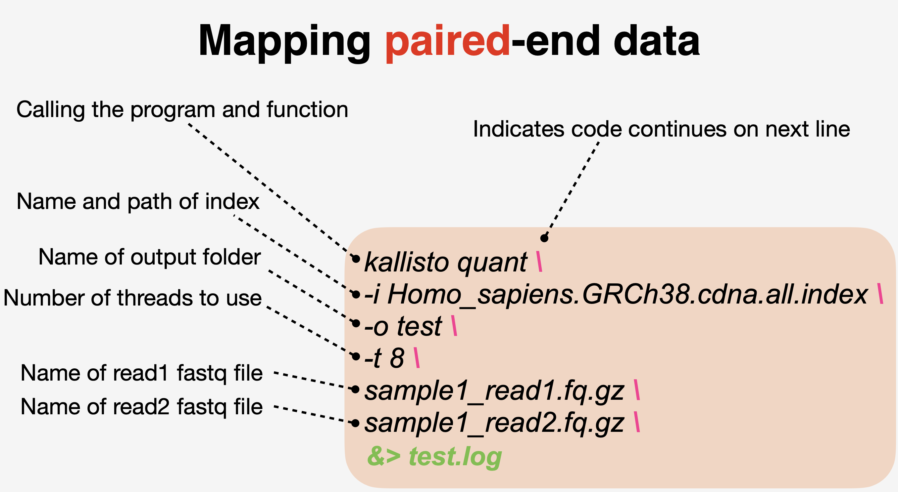
- Summarize output with Multiqc in a single summary html
multiqc -d .### first the healthy subjects (HS)
kallisto quant -i Homo_sapiens.GRCh38.cdna.all.index -o HS01 -t 4 --single -l 250 -s 30 SRR8668755.fastq.gz &> HS01.log
kallisto quant -i Homo_sapiens.GRCh38.cdna.all.index -o HS02 -t 4 --single -l 250 -s 30 SRR8668756.fastq.gz &> HS02.log
kallisto quant -i Homo_sapiens.GRCh38.cdna.all.index -o HS03 -t 4 --single -l 250 -s 30 SRR8668757.fastq.gz &> HS03.log
kallisto quant -i Homo_sapiens.GRCh38.cdna.all.index -o HS04 -t 4 --single -l 250 -s 30 SRR8668758.fastq.gz &> HS04.log
kallisto quant -i Homo_sapiens.GRCh38.cdna.all.index -o HS05 -t 4 --single -l 250 -s 30 SRR8668759.fastq.gz &> HS05.log
### then the cutaneous leishmaniasis (CL) patients
kallisto quant -i Homo_sapiens.GRCh38.cdna.all.index -o CL08 -t 4 --single -l 250 -s 30 SRR8668769.fastq.gz &> CL08.log
kallisto quant -i Homo_sapiens.GRCh38.cdna.all.index -o CL10 -t 4 --single -l 250 -s 30 SRR8668771.fastq.gz &> CL10.log
kallisto quant -i Homo_sapiens.GRCh38.cdna.all.index -o CL11 -t 4 --single -l 250 -s 30 SRR8668772.fastq.gz &> CL11.log
kallisto quant -i Homo_sapiens.GRCh38.cdna.all.index -o CL12 -t 4 --single -l 250 -s 30 SRR8668773.fastq.gz &> CL12.log
kallisto quant -i Homo_sapiens.GRCh38.cdna.all.index -o CL13 -t 4 --single -l 250 -s 30 SRR8668774.fastq.gz &> CL13.log
### Summarize outputs
multiqc -d .Step3: Import data into R
Load packages
Import study design files
### load study design
targets <- read_tsv(
here("learn", "DIY_Transcriptomics", "config", "studydesign.txt")
)
targets
## # A tibble: 10 × 3
## sample sra_accession group
## <chr> <chr> <chr>
## 1 HS01 SRR8668755 healthy
## 2 HS02 SRR8668756 healthy
## 3 HS03 SRR8668757 healthy
## 4 HS04 SRR8668758 healthy
## 5 HS05 SRR8668759 healthy
## 6 CL08 SRR8668769 disease
## 7 CL10 SRR8668771 disease
## 8 CL11 SRR8668772 disease
## 9 CL12 SRR8668773 disease
## 10 CL13 SRR8668774 disease
### create file paths for the abundance files
path <- file.path(
"learn", "DIY_Transcriptomics", "data", "fastq", targets$sample, "abundance.tsv"
)
path
## [1] "learn/DIY_Transcriptomics/data/fastq/HS01/abundance.tsv"
## [2] "learn/DIY_Transcriptomics/data/fastq/HS02/abundance.tsv"
## [3] "learn/DIY_Transcriptomics/data/fastq/HS03/abundance.tsv"
## [4] "learn/DIY_Transcriptomics/data/fastq/HS04/abundance.tsv"
## [5] "learn/DIY_Transcriptomics/data/fastq/HS05/abundance.tsv"
## [6] "learn/DIY_Transcriptomics/data/fastq/CL08/abundance.tsv"
## [7] "learn/DIY_Transcriptomics/data/fastq/CL10/abundance.tsv"
## [8] "learn/DIY_Transcriptomics/data/fastq/CL11/abundance.tsv"
## [9] "learn/DIY_Transcriptomics/data/fastq/CL12/abundance.tsv"
## [10] "learn/DIY_Transcriptomics/data/fastq/CL13/abundance.tsv"
### make sure path is correct
all(file.exists(path))
## [1] TRUEGet organsim specific annotations
tx <- transcripts(
EnsDb.Hsapiens.v86, columns = c("tx_id", "gene_name")
) |>
as_tibble() |>
### need to change first column name to 'target_id'
rename(target_id = tx_id)
tx
## # A tibble: 216,741 × 7
## seqnames start end width strand target_id gene_name
## <fct> <int> <int> <int> <fct> <chr> <chr>
## 1 1 11869 14409 2541 + ENST00000456328 DDX11L1
## 2 1 12010 13670 1661 + ENST00000450305 DDX11L1
## 3 1 14404 29570 15167 - ENST00000488147 WASH7P
## 4 1 17369 17436 68 - ENST00000619216 MIR6859-1
## 5 1 29554 31097 1544 + ENST00000473358 MIR1302-2
## 6 1 30267 31109 843 + ENST00000469289 MIR1302-2
## 7 1 30366 30503 138 + ENST00000607096 MIR1302-2
## 8 1 34554 36081 1528 - ENST00000417324 FAM138A
## 9 1 35245 36073 829 - ENST00000461467 FAM138A
## 10 1 52473 53312 840 + ENST00000606857 OR4G4P
## # ℹ 216,731 more rows
### move transcrip ID the first column in the dataframe
tx <- select(tx, "target_id", "gene_name")Load transcript counts
txi_gene <- tximport(
path,
type = "kallisto",
tx2gene = tx,
txOut = FALSE, # How does the result change if this =FALSE vs =TRUE?
countsFromAbundance = "lengthScaledTPM",
ignoreTxVersion = TRUE
)
### take a look at the type of object
class(txi_gene)
## [1] "list"
names(txi_gene)
## [1] "abundance" "counts" "length"
## [4] "countsFromAbundance"Step4: Wrangling gene expression
### examine the data
tpm <- txi_gene$abundance
counts <- txi_gene$counts
### generate summary stats
tpm_stats <- transform(
tpm,
SD = rowSds(tpm),
AVG = rowMeans(tpm),
MED = rowMedians(tpm)
)
### look at the summary data
head(tpm_stats)
## X1 X2 X3 X4 X5 X6
## 5S_rRNA 0.0000000 0.0000000 0.000000 0.00000000 0.000000 0.0000000
## A1BG 6.3823340 6.7399420 3.842043 6.70710000 8.591181 14.6144150
## A1CF 0.0757872 0.0616752 0.214226 0.00859446 0.000000 0.0265036
## A2M 162.5622990 341.8312630 295.814803 261.47230600 169.453100 345.6983730
## A2ML1 109.6624900 80.6018680 90.356840 64.11152700 67.035650 52.5762220
## A2MP1 0.2237170 0.3143760 0.390022 0.15622800 0.122260 0.2700100
## X7 X8 X9 X10 SD
## 5S_rRNA 0.000000 0.0000000 0.00000000 0.0000000 0.00000000
## A1BG 18.182700 12.8662800 12.05296100 9.8268802 4.41172300
## A1CF 0.072777 0.1359934 0.03722713 0.0581254 0.06414927
## A2M 643.554440 341.8972850 324.80208900 415.9663840 135.78415021
## A2ML1 4.401309 5.1981760 1.75721000 15.1189910 39.78108982
## A2MP1 1.087410 0.7737610 0.68834900 0.6378640 0.31619850
## AVG MED
## 5S_rRNA 0.00000000 0.0000000
## A1BG 9.98058361 9.2090306
## A1CF 0.06909094 0.0599003
## A2M 330.30523424 333.3166760
## A2ML1 49.08202830 58.3438745
## A2MP1 0.46639970 0.3521990
### visualize it using scatter plot
ggplot(tpm_stats, aes(x = SD, y = MED)) +
geom_point(shape = 18, size = 2) +
geom_smooth(method = lm) +
geom_hex(show.legend = FALSE) +
labs(
y = "Median", x = "Standard deviation",
title = "Transcripts per million (TPM)",
subtitle = "unfiltered, non-normalized data",
caption = "DIYtranscriptomics - Spring 2020"
) +
theme_classic() +
theme_dark() +
theme_bw()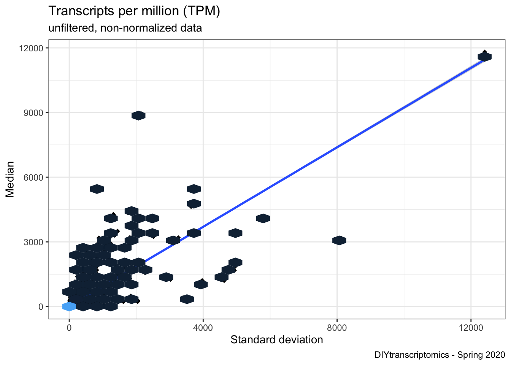
### capture sample labels from study design
sampleLabels <- targets$sample
### make DGElist from the counts
DGEList <- DGEList(txi_gene$counts)
DGEList
## An object of class "DGEList"
## $counts
## Sample1 Sample2 Sample3 Sample4 Sample5 Sample6
## 5S_rRNA 0.00000 0.00000 0.00000 0.000000 0.0000 0.00000
## A1BG 184.19070 245.13169 101.73418 79.204797 13.3335 682.72256
## A1CF 22.94477 23.53171 59.50815 1.064719 0.0000 12.98875
## A2M 11901.13136 31538.08430 19870.31859 7832.900974 667.1460 40967.58721
## A2ML1 15162.86062 14045.04908 11463.06052 3627.335147 498.4618 11767.57706
## Sample7 Sample8 Sample9 Sample10
## 5S_rRNA 0.0000 0.00000 0.00000 0.00000
## A1BG 391.5812 326.10430 397.97768 499.96534
## A1CF 16.4421 36.15938 12.89508 31.02343
## A2M 35158.3894 21982.61779 27205.95758 53686.20520
## A2ML1 454.1300 631.23251 277.98636 3685.37686
## 35366 more rows ...
##
## $samples
## group lib.size norm.factors
## Sample1 1 42300696 1
## Sample2 1 51775632 1
## Sample3 1 40485664 1
## Sample4 1 16661634 1
## Sample5 1 2191577 1
## Sample6 1 55389922 1
## Sample7 1 28800520 1
## Sample8 1 31632164 1
## Sample9 1 39464569 1
## Sample10 1 67827185 1
### get counts per million
cpm <- cpm(DGEList)
colSums(cpm)
## Sample1 Sample2 Sample3 Sample4 Sample5 Sample6 Sample7 Sample8
## 1e+06 1e+06 1e+06 1e+06 1e+06 1e+06 1e+06 1e+06
## Sample9 Sample10
## 1e+06 1e+06
log2_cpm <- cpm(DGEList, log=TRUE)
### connvert data matrix to dataframe
log2_cpm_df <- as_tibble(log2_cpm, rownames = "geneID")
### add sample names
colnames(log2_cpm_df) <- c("geneID", sampleLabels)
### pivot from wide to long
log2_cpm_df_pivot <- pivot_longer(
log2_cpm_df,
cols = HS01:CL13,
names_to = "samples",
values_to = "expression"
)
p1 <- ggplot(
log2_cpm_df_pivot,
aes(x = samples, y = expression, fill = samples)
) +
geom_violin(trim = FALSE, show.legend = FALSE) +
stat_summary(fun = "median",
geom = "point",
shape = 95,
size = 10,
color = "black",
show.legend = FALSE
) +
labs(
y = "log2 expression", x = "sample",
title = "Log2 Counts per Million (CPM)",
subtitle = "unfiltered, non-normalized",
caption = paste0("produced on ", Sys.time())
) +
theme_bw()
p1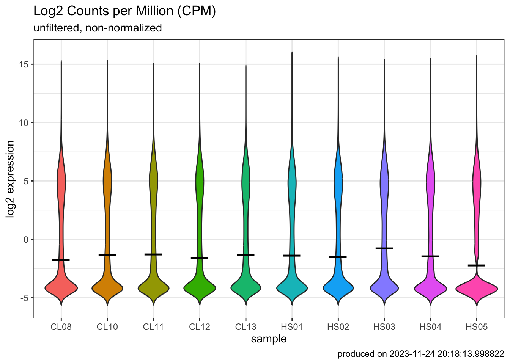
- How many genes or transcripts have no read counts at all?
### filter data
table(rowSums(DGEList$counts==0)==10)
##
## FALSE TRUE
## 29373 5998
### how many genes had more than 1 CPM (TRUE) in at least 3 samples
### set cutoff
keepers <- rowSums(cpm>1) >= 5 # user defined
DGEList_filtered <- DGEList[keepers, ]
log2_cpm_filtered <- cpm(DGEList_filtered, log=TRUE)
log2_cpm_filtered_df <- as_tibble(log2_cpm_filtered, rownames = "geneID")
colnames(log2_cpm_filtered_df) <- c("geneID", sampleLabels)
log2_cpm_filtered_df_pivot <- pivot_longer(
log2_cpm_filtered_df,
cols = HS01:CL13,
names_to = "samples",
values_to = "expression"
)
p2 <- ggplot(
log2_cpm_filtered_df_pivot,
aes(x = samples, y = expression, fill = samples)
) +
geom_violin(trim = FALSE, show.legend = FALSE) +
stat_summary(
fun = "median",
geom = "point",
shape = 95,
size = 10,
color = "black",
show.legend = FALSE
) +
labs(y = "log2 expression", x = "sample",
title = "Log2 Counts per Million (CPM)",
subtitle = "filtered, non-normalized",
caption = paste0("produced on ", Sys.time())) +
theme_bw()
p2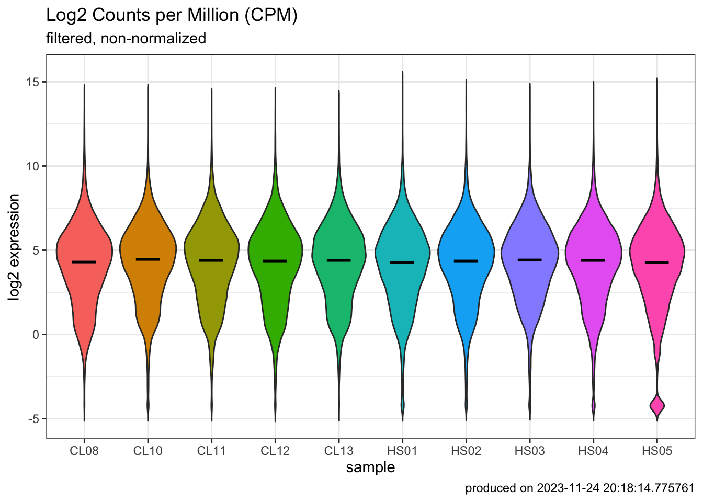
### normalize data
DGEList_filtered_norm <- calcNormFactors(
DGEList_filtered, method = "TMM"
)
log2_cpm_filtered_norm <- cpm(
DGEList_filtered_norm, log = TRUE
)
log2_cpm_filtered_norm_df <- as_tibble(
log2_cpm_filtered_norm, rownames = "geneID"
)
colnames(log2_cpm_filtered_norm_df) <- c("geneID", sampleLabels)
log2_cpm_filtered_norm_df_pivot <- pivot_longer(
log2_cpm_filtered_norm_df,
cols = HS01:CL13,
names_to = "samples",
values_to = "expression"
)
p3 <- ggplot(
log2_cpm_filtered_norm_df_pivot,
aes(x = samples, y = expression, fill = samples)
) +
geom_violin(trim = FALSE, show.legend = FALSE) +
stat_summary(
fun = "median",
geom = "point",
shape = 95,
size = 10,
color = "black",
show.legend = FALSE
) +
labs(
y = "log2 expression", x = "sample",
title = "Log2 Counts per Million (CPM)",
subtitle = "filtered, TMM normalized",
caption = paste0("produced on ", Sys.time())
) +
theme_bw()
### combine plots
plot_grid(
p1, p2, p3,
labels = c('A', 'B', 'C'),
label_size = 12
)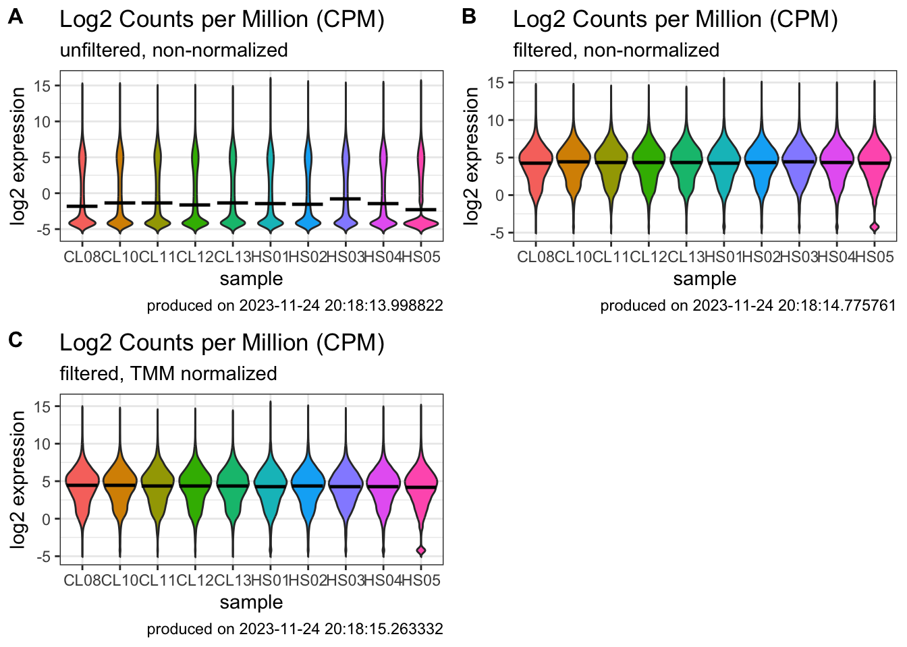
Step5: Data exploration with multivariate analysis
### Identify variables of interest in study design file
group <- targets$group
group <- factor(group)
group
## [1] healthy healthy healthy healthy healthy disease disease disease disease
## [10] disease
## Levels: disease healthyHierarchical clustering
### calculate distance methods (e.g. switch from 'maximum' to 'euclidean')
distance <- dist(
t(log2_cpm_filtered_norm), method = "maximum"
)
### other distance methods are "euclidean", maximum", "manhattan", "canberra", "binary" or "minkowski"
clusters <- hclust(distance, method = "average")
### other agglomeration methods are "ward.D", "ward.D2", "single", "complete", "average", "mcquitty", "median", or "centroid"
plot(clusters, labels=sampleLabels)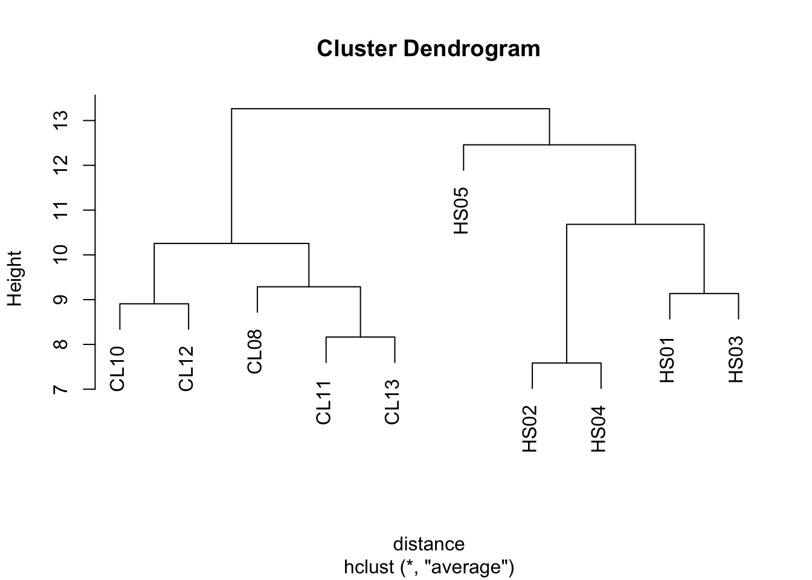
Principal compoent analysis
pca_res <- prcomp(
t(log2_cpm_filtered_norm),
scale. = FALSE, retx = TRUE
)
### prints variance summary for all principal components.
summary(pca_res)
## Importance of components:
## PC1 PC2 PC3 PC4 PC5 PC6
## Standard deviation 113.9821 49.8074 33.42376 27.08082 26.40296 22.23750
## Proportion of Variance 0.6656 0.1271 0.05723 0.03757 0.03571 0.02533
## Cumulative Proportion 0.6656 0.7927 0.84993 0.88750 0.92322 0.94855
## PC7 PC8 PC9 PC10
## Standard deviation 20.50645 17.71945 16.42366 1.816e-13
## Proportion of Variance 0.02154 0.01609 0.01382 0.000e+00
## Cumulative Proportion 0.97010 0.98618 1.00000 1.000e+00
### look at the PCA result (pca.res)
ls(pca_res)
## [1] "center" "rotation" "scale" "sdev" "x"
### $rotation shows you how much each gene influenced each PC (called 'scores')
head(pca_res$rotation)
## PC1 PC2 PC3 PC4 PC5
## A1BG 0.006058601 -0.005265865 0.0030322868 0.008759217 0.0021903806
## A2M 0.004897345 0.002459393 -0.0029437295 0.010128989 0.0010754828
## A2ML1 -0.015426376 0.002131922 0.0236833694 0.012776801 0.0151330784
## A2MP1 0.008361769 0.005416383 -0.0080073403 -0.004989098 0.0019137300
## A4GALT -0.004861196 -0.010071400 -0.0040747825 0.004365382 -0.0073287027
## AAAS 0.002247684 -0.005546829 -0.0003891962 0.005401109 -0.0008667994
## PC6 PC7 PC8 PC9 PC10
## A1BG 0.002600255 1.165903e-02 0.002109927 0.006017461 -0.62642253
## A2M -0.003082754 -2.988929e-03 0.007583352 -0.002958490 -0.07649096
## A2ML1 -0.013272183 -1.389944e-02 0.008501332 0.020687796 0.29435235
## A2MP1 -0.002415560 1.626299e-03 0.011281299 -0.005577339 -0.50451276
## A4GALT -0.009698589 6.199904e-05 0.012467687 0.004110126 -0.31572438
## AAAS 0.006991981 3.783003e-03 0.004628266 0.003568768 -0.14061416
### 'x' shows you how much each sample influenced each PC (called 'loadings')
pca_res$x
## PC1 PC2 PC3 PC4 PC5 PC6
## Sample1 -116.29139 38.2334807 21.154790 -31.204512 24.3342557 -5.032445
## Sample2 -98.08443 28.5182187 6.488451 20.455248 -24.7150117 -5.625522
## Sample3 -98.57599 46.3377421 -21.880766 -22.638077 26.9619112 8.312240
## Sample4 -102.83232 27.1997919 -10.521681 36.884584 -34.6489813 11.837625
## Sample5 -119.48548 -130.0448432 -8.771308 -8.078419 0.7747427 -2.609032
## Sample6 76.83934 -13.0282654 65.541177 34.668976 32.4966464 9.756467
## Sample7 114.80802 0.9427947 -66.411954 27.226075 30.8708143 -6.756527
## Sample8 122.14072 -0.8992447 -2.600281 -31.000051 -26.0328136 19.278692
## Sample9 129.23356 -4.8764679 3.983424 -16.285254 -13.4446636 25.667565
## Sample10 92.24799 7.6167930 13.018146 -10.028570 -16.5969001 -54.829063
## PC7 PC8 PC9 PC10
## Sample1 37.289161 -8.2755495 9.2338103 6.432316e-13
## Sample2 9.263960 37.6085903 -14.4523481 7.064106e-14
## Sample3 -40.584484 0.6580365 -8.3486393 3.455381e-13
## Sample4 -3.089166 -28.1333136 11.4331050 -5.619926e-14
## Sample5 -2.014396 -0.2124505 -0.6860841 -1.205842e-13
## Sample6 -10.563273 2.1965073 5.3204553 -6.485607e-14
## Sample7 15.193876 4.0838551 4.1812220 -2.588419e-13
## Sample8 -5.936520 15.6564254 28.6671255 -1.908206e-13
## Sample9 11.836127 -13.5624080 -32.5109827 -3.271781e-13
## Sample10 -11.395285 -10.0196929 -2.8376640 1.788202e-13
### A screeplot is a standard way to view eigenvalues for each PCA
screeplot(pca_res) 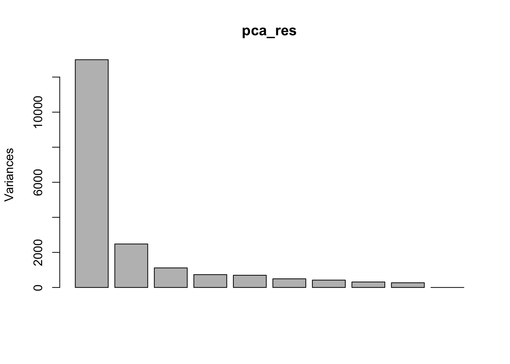
- Can we figure out the identify of outlier?
### visualize PCA result
pca_res_df <- as_tibble(pca_res$x) |>
bind_cols(targets) |>
mutate(group = factor(group))
pca_plot1 <- pca_res_df |>
ggplot(
aes(x = PC1, y = PC2, label = sample, color = group)
) +
geom_point(size = 4) +
stat_ellipse() +
xlab(paste0("PC1 (", pc_per[1], "%", ")")) +
ylab(paste0("PC2 (", pc_per[2], "%", ")")) +
labs(title = "PCA plot",
caption = paste0("produced on ", Sys.time())) +
coord_fixed() +
theme_bw()
pca_plot1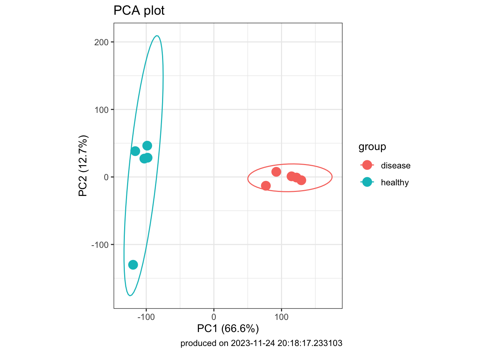
- Another way to view PCA laodings to understand impact of each sample on each pricipal component
pca_res_df <- pca_res$x[, 1:4] |>
as_tibble() |>
add_column(
sample = sampleLabels,
group = group
)
### dataframe to be pivoted
pca_pivot <- pivot_longer(
pca_res_df,
cols = PC1:PC4,
names_to = "PC",
values_to = "loadings"
)
### plot
pca_plot2 <- ggplot(pca_pivot) +
aes(x = sample, y = loadings, fill = group) +
geom_bar(stat = "identity") +
facet_wrap(~PC) +
labs(
title = "PCA 'small multiples' plot",
caption = paste0("produced on ", Sys.time())
) +
theme_bw() +
coord_flip()
pca_plot2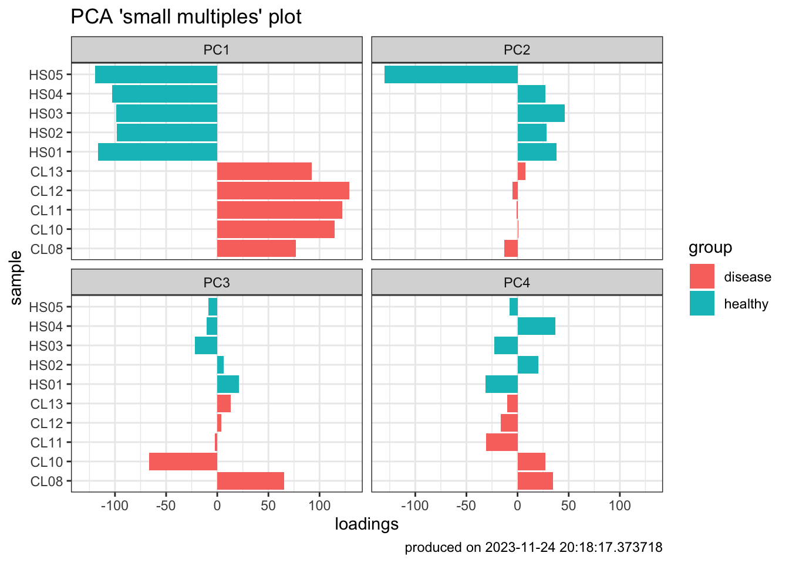
### combine plot
# plot_grid(pca_plot1, pca_plot2)# make columns comparing each of the averages above that you're interested in
mydata_df <- mutate(
log2_cpm_filtered_norm_df,
healthy.AVG = (HS01 + HS02 + HS03 + HS04 + HS05)/5,
disease.AVG = (CL08 + CL10 + CL11 + CL12 + CL13)/5,
LogFC = (disease.AVG - healthy.AVG)
) |>
mutate_if(is.numeric, round, 2)
### sort data
mydata_sort <- mydata_df |>
arrange(desc(LogFC)) |>
select(geneID, LogFC)
mydata_sort
## # A tibble: 15,765 × 2
## geneID LogFC
## <chr> <dbl>
## 1 IGLC3 10.6
## 2 MMP1 10.4
## 3 IGKV1-5 10.2
## 4 IGLV3-1 9.96
## 5 IGLV3-19 9.9
## 6 IGLC1 9.88
## 7 IGKV1D-39 9.87
## 8 IGLL5 9.85
## 9 IGKV1D-33 9.83
## 10 IGLV2-8 9.65
## # ℹ 15,755 more rows
### filter data
mydata_filter <- mydata_df |>
filter(
geneID == "MMP1" | geneID == "GZMB" | geneID == "IL1B" | geneID == "GNLY" | geneID == "IFNG"
| geneID == "CCL4" | geneID == "PRF1" | geneID == "APOBEC3A" | geneID == "UNC13A"
) |>
select(geneID, healthy.AVG, disease.AVG, LogFC) |>
arrange(desc(LogFC))
mydata_filter
## # A tibble: 9 × 4
## geneID healthy.AVG disease.AVG LogFC
## <chr> <dbl> <dbl> <dbl>
## 1 MMP1 1.44 11.9 10.4
## 2 IFNG -3.65 4.42 8.07
## 3 CCL4 -1.75 6.14 7.89
## 4 GZMB -0.58 6.47 7.05
## 5 GNLY 0.98 7.17 6.19
## 6 IL1B 0.63 6.48 5.85
## 7 PRF1 1.03 6.64 5.61
## 8 APOBEC3A 0.27 5.6 5.33
## 9 UNC13A -0.78 1.95 2.73### Produce publication-quality tables using `gt` package
mydata_filter |>
gt() |>
fmt_number(columns = 2:4, decimals = 1) |>
tab_header(
title = md("**Regulators of skin pathogenesis**"),
subtitle = md("*during cutaneous leishmaniasis*")
) |>
tab_footnote(
footnote = "Deletion or blockaid ameliorates disease in mice",
locations = cells_body(columns = geneID, rows = c(6, 7))
) |>
tab_footnote(
footnote = "Associated with treatment failure in multiple studies",
locations = cells_body(columns = geneID, rows = c(2:9))
) |>
tab_footnote(
footnote = "Implicated in parasite control",
locations = cells_body(columns = geneID, rows = c(2))
) |>
tab_source_note(
source_note = md("Reference: Amorim *et al*., (2019). DOI: 10.1126/scitranslmed.aar3619")
)| Regulators of skin pathogenesis | |||
| during cutaneous leishmaniasis | |||
| geneID | healthy.AVG | disease.AVG | LogFC |
|---|---|---|---|
| MMP1 | 1.4 | 11.9 | 10.4 |
| IFNG1,2 | −3.6 | 4.4 | 8.1 |
| CCL41 | −1.8 | 6.1 | 7.9 |
| GZMB1 | −0.6 | 6.5 | 7.0 |
| GNLY1 | 1.0 | 7.2 | 6.2 |
| IL1B3,1 | 0.6 | 6.5 | 5.8 |
| PRF13,1 | 1.0 | 6.6 | 5.6 |
| APOBEC3A1 | 0.3 | 5.6 | 5.3 |
| UNC13A1 | −0.8 | 1.9 | 2.7 |
| Reference: Amorim et al., (2019). DOI: 10.1126/scitranslmed.aar3619 | |||
| 1 Associated with treatment failure in multiple studies | |||
| 2 Implicated in parasite control | |||
| 3 Deletion or blockaid ameliorates disease in mice | |||
- Make an interactive table using the
DTpackage
# datatable(
# mydata_df[, c(1, 12:14)],
# extensions = c('KeyTable', "FixedHeader"),
# filter = 'top',
# options = list(keys = TRUE,
# searchHighlight = TRUE,
# pageLength = 10,
# # dom = "Blfrtip",
# # buttons = c("copy", "csv", "excel"),
# lengthMenu = c("10", "25", "50", "100"))
# )- Make an interactive scatter plot with
plotly
myplot <- ggplot(mydata_df) +
aes(x=healthy.AVG, y=disease.AVG,
text = paste("Symbol:", geneID)) +
geom_point(shape=16, size=1) +
ggtitle("disease vs. healthy") +
theme_bw()
myplot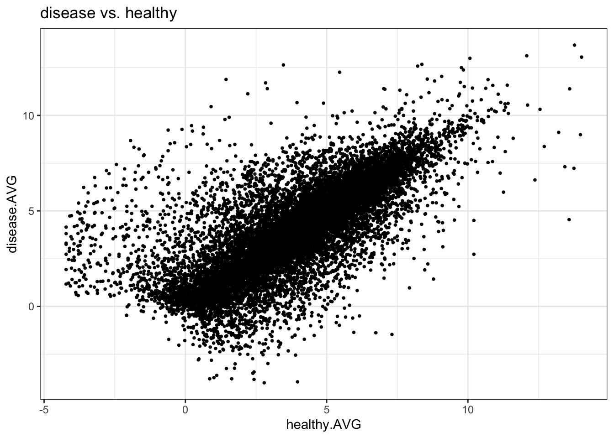
# ggplotly(myplot)Step6: Differential gene expression
Set up design matrix
group <- factor(targets$group)
design <- model.matrix(~0 + group)
colnames(design) <- levels(group)
# NOTE: if you need a paired analysis (a.k.a.'blocking' design) or have a batch effect, the following design is useful
# design <- model.matrix(~block + treatment)
# this is just an example. 'block' and 'treatment' would need to be objects in your environmentModel mean-variance trend and fit linear model to data
### Use VOOM function from Limma package to model the mean-variance relationship
head(DGEList_filtered_norm)
## An object of class "DGEList"
## $counts
## Sample1 Sample2 Sample3 Sample4 Sample5 Sample6
## A1BG 184.19070 245.13169 101.73418 79.20480 13.3334957 682.72256
## A2M 11901.13136 31538.08430 19870.31859 7832.90097 667.1460374 40967.58721
## A2ML1 15162.86062 14045.04908 11463.06052 3627.33515 498.4617540 11767.57706
## A2MP1 29.31478 51.91491 46.89141 8.37674 0.8615391 57.27197
## A4GALT 128.32345 355.39448 131.42493 75.43359 30.6454026 112.79123
## AAAS 269.07806 457.62142 257.49394 147.56154 27.9749726 636.62246
## Sample7 Sample8 Sample9 Sample10
## A1BG 391.58119 326.10430 397.9777 499.9653
## A2M 35158.38935 21982.61779 27205.9576 53686.2052
## A2ML1 454.12997 631.23251 277.9864 3685.3769
## A2MP1 106.33010 89.04506 103.1984 147.3506
## A4GALT 87.64872 88.03357 62.6173 230.0622
## AAAS 382.02897 412.70476 446.8081 509.4904
##
## $samples
## group lib.size norm.factors
## Sample1 1 42300696 0.9838341
## Sample2 1 51775632 1.0056785
## Sample3 1 40485664 1.1055948
## Sample4 1 16661634 1.0332639
## Sample5 1 2191577 1.0154852
## Sample6 1 55389922 0.8810033
## Sample7 1 28800520 1.0117840
## Sample8 1 31632164 1.0093077
## Sample9 1 39464569 0.9639270
## Sample10 1 67827185 1.0046274
v_DEGList_filtered_norm <- voom(DGEList_filtered_norm, design, plot = TRUE)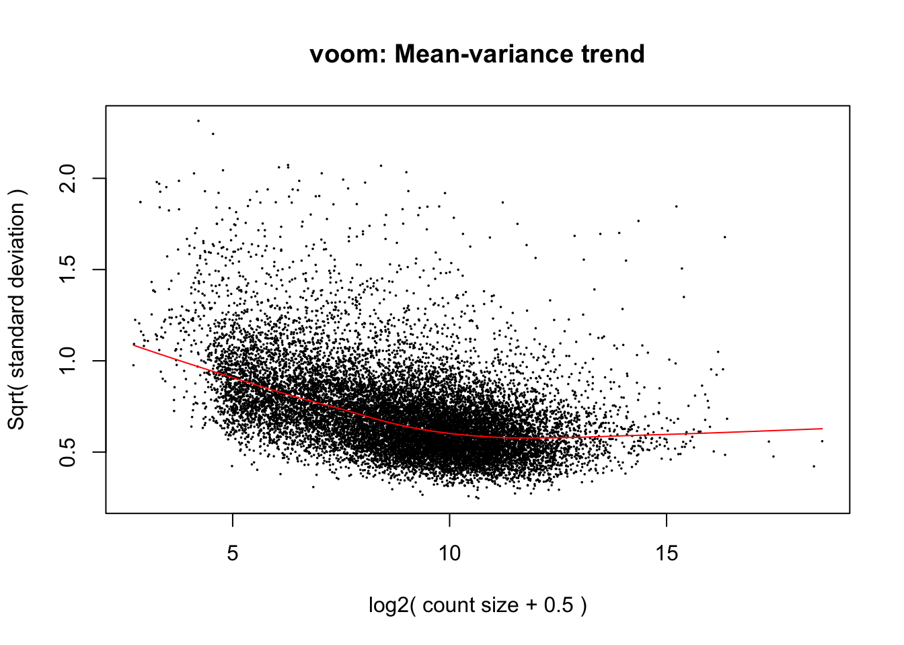
# fit a linear model to your data
fit <- lmFit(v_DEGList_filtered_norm, design)
### contrast matrix
contrast_matrix <- makeContrasts(infection = disease - healthy,
levels=design)
### extract the linear model fit
fits <- contrasts.fit(fit, contrast_matrix)
### get bayesian stats for the linear model fit
ebFit <- eBayes(fits)
#write.fit(ebFit, file="lmfit_results.txt")
### top table to view DEGs
TopHits <- topTable(ebFit, adjust ="BH", coef=1, number=40000, sort.by="logFC")
### convert to a tibble
TopHits_df <- TopHits |>
as_tibble(rownames = "geneID")
TopHits_df
## # A tibble: 15,765 × 7
## geneID logFC AveExpr t P.Value adj.P.Val B
## <chr> <dbl> <dbl> <dbl> <dbl> <dbl> <dbl>
## 1 MMP1 10.8 6.65 13.4 0.0000000182 0.00000123 10.0
## 2 IGLC3 10.3 3.49 7.50 0.00000815 0.0000778 4.06
## 3 IGKV1D-33 10.2 1.12 9.29 0.000000913 0.0000160 6.11
## 4 IGKV2D-28 10.1 0.898 9.50 0.000000723 0.0000137 6.32
## 5 IGLV3-25 10.0 0.242 6.89 0.0000186 0.000147 3.27
## 6 IGLV3-1 10.0 1.75 11.8 0.0000000715 0.00000281 8.36
## 7 IGKV1-5 9.93 3.36 13.8 0.0000000124 0.00000101 10.0
## 8 IGHV1-3 9.89 0.447 6.24 0.0000468 0.000302 2.37
## 9 IGLV3-19 9.84 2.18 6.93 0.0000175 0.000140 3.33
## 10 IGHV3-21 9.80 1.42 9.00 0.00000128 0.0000200 5.80
## # ℹ 15,755 more rows
Limma outputs
- TopTable (from Limma) outputs a few different stats:
- logFC, AveExpr, and P.Value should be self-explanatory
- adj.P.Val is your adjusted P value, also known as an FDR (if BH method was used for multiple testing correction)
- B statistic is the log-odds that that gene is differentially expressed. If B = 1.5, then log odds is e^1.5, where e is euler’s constant (approx. 2.718). So, the odds of differential expression os about 4.8 to 1
- t statistic is ratio of the logFC to the standard error (where the error has been moderated across all genes…because of Bayesian approach)
### volcano plot
vplot <- TopHits_df |>
ggplot(
aes(y = -log10(adj.P.Val), x = logFC, text = paste("Symbol:", geneID))
) +
geom_point(size = 2) +
geom_hline(yintercept = -log10(0.01), linetype = "longdash", colour = "grey", linewidth = 1) +
geom_vline(xintercept = 1, linetype = "longdash", colour = "#BE684D", linewidth = 1) +
geom_vline(xintercept = -1, linetype = "longdash", colour = "#2C467A", linewidth = 1) +
# annotate("rect", xmin = 1, xmax = 12, ymin = -log10(0.01), ymax = 7.5, alpha=.2, fill="#BE684D") +
# annotate("rect", xmin = -1, xmax = -12, ymin = -log10(0.01), ymax = 7.5, alpha=.2, fill="#2C467A") +
labs(title = "Volcano plot",
subtitle = "Cutaneous leishmaniasis",
caption = paste0("produced on ", Sys.time())) +
theme_bw()
vplot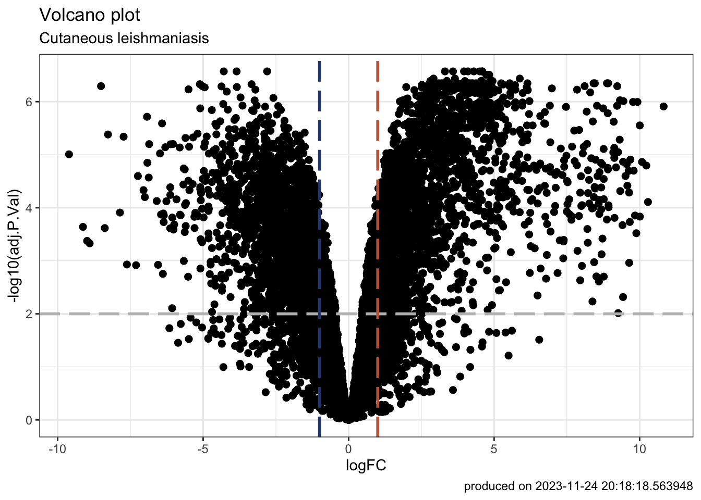
### pull out DEGs and make venn diagram
results <- decideTests(
ebFit, method = "global", adjust.method = "BH", p.value = 0.01, lfc = 2
)
head(results)
## TestResults matrix
## Contrasts
## infection
## A1BG 0
## A2M 0
## A2ML1 -1
## A2MP1 0
## A4GALT 0
## AAAS 0
summary(results)
## infection
## Down 1012
## NotSig 13446
## Up 1307
vennDiagram(results, include="up")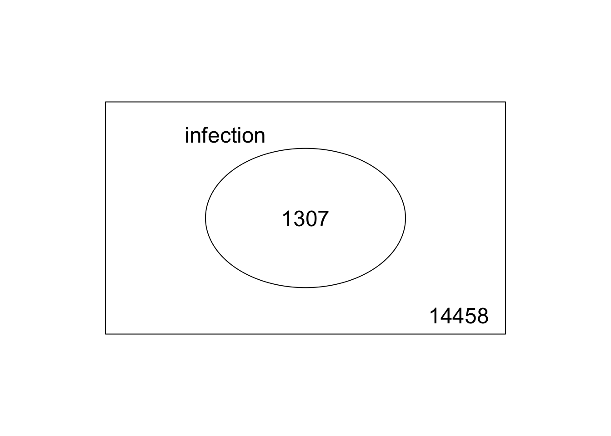
### retrieve expression data for DEGs
head(v_DEGList_filtered_norm$E)
## Sample1 Sample2 Sample3 Sample4 Sample5 Sample6
## A1BG 2.1498709 2.237982296 1.19157184 2.2109278 2.6359548 3.8074408
## A2M 8.1597752 9.242459704 8.79420169 8.8297563 8.2288005 9.7134419
## A2ML1 8.5092054 8.075454826 8.00060559 7.7192264 7.8086463 7.9138199
## A2MP1 -0.4811408 0.009534871 0.08239155 -0.9556369 -0.7089007 0.2435267
## A4GALT 1.6301549 2.772935178 1.55941146 2.1409994 3.8068082 1.2151214
## AAAS 2.6954627 3.137215647 2.52703139 3.1043863 3.6774835 3.7066558
## Sample7 Sample8 Sample9 Sample10
## A1BG 3.750084 3.354713 3.3888732 2.876674
## A2M 10.236678 9.427422 9.4821796 9.621825
## A2ML1 3.963625 4.306483 2.8719810 5.757340
## A2MP1 1.874250 1.487855 1.4467684 1.117544
## A4GALT 1.596943 1.471466 0.7304817 1.758560
## AAAS 3.714501 3.694027 3.5556433 2.903874
colnames(v_DEGList_filtered_norm$E) <- sampleLabels
diffGenes <- v_DEGList_filtered_norm$E[results[,1] !=0,]
head(diffGenes)
## HS01 HS02 HS03 HS04 HS05 CL08 CL10
## A2ML1 8.509205 8.075455 8.000606 7.719226 7.808646 7.913820 3.9636246
## AADAC 3.783598 3.145125 3.421001 3.846583 4.124090 2.241617 -3.5057299
## AADACL2 6.884775 7.025967 6.096531 6.700546 6.104662 5.215819 -5.8649243
## AARD 2.817882 1.719728 2.562007 2.090062 2.784928 1.028134 0.2785801
## ABCA10 4.429922 4.330043 6.261231 3.871370 2.785400 2.261820 2.9336235
## ABCA12 8.609129 7.810834 7.884251 7.603805 7.963791 7.338358 3.3247149
## CL11 CL12 CL13
## A2ML1 4.3064835 2.8719810 5.7573398
## AADAC 0.1777154 -0.9997370 -0.5843452
## AADACL2 2.9288016 2.0251967 3.5424241
## AARD 0.2142361 -0.4255113 0.1288021
## ABCA10 2.4838643 2.4430992 0.6882190
## ABCA12 5.2844659 4.7055495 6.6999992
dim(diffGenes)
## [1] 2319 10
#convert DEGs to a dataframe using as_tibble
diffGenes_df <- as_tibble(diffGenes, rownames = "geneID")
### create interactive tables to display DEGs
# datatable(diffGenes_df,
# extensions = c('KeyTable', "FixedHeader"),
# caption = 'Table 1: DEGs in cutaneous leishmaniasis',
# options = list(keys = TRUE, searchHighlight = TRUE, pageLength = 10, lengthMenu = c("10", "25", "50", "100"))) |>
# formatRound(columns=c(2:11), digits=2)
### write DEGs to a file
# write_tsv(diffGenes_df, "DiffGenes.txt")
#NOTE: this .txt file can be directly used for input into other clustering or network analysis tools (e.g., String, Clust (https://github.com/BaselAbujamous/clust, etc.)Step7: Module identification
heatcolors <- rev(brewer.pal(name="RdBu", n=11))
#cluster rows by pearson correlation
clustRows <- hclust(
as.dist(1-cor(t(diffGenes), method="pearson")),
method="complete"
)
#cluster columns by pearson correlation
clustColumns <- hclust(
as.dist(1-cor(diffGenes, method="spearman")),
method="complete"
)
module_assign <- cutree(clustRows, k=2)
module_color <- rainbow(length(unique(module_assign)), start=0.1, end=0.9)
module_color <- module_color[as.vector(module_assign)]
heatmap.2(
diffGenes,
Rowv = as.dendrogram(clustRows),
Colv = as.dendrogram(clustColumns),
RowSideColors = module_color,
col = heatcolors, scale = 'row', labRow = NA,
density.info = "none", trace = "none",
cexRow = 1, cexCol = 1, margins = c(8, 20)
)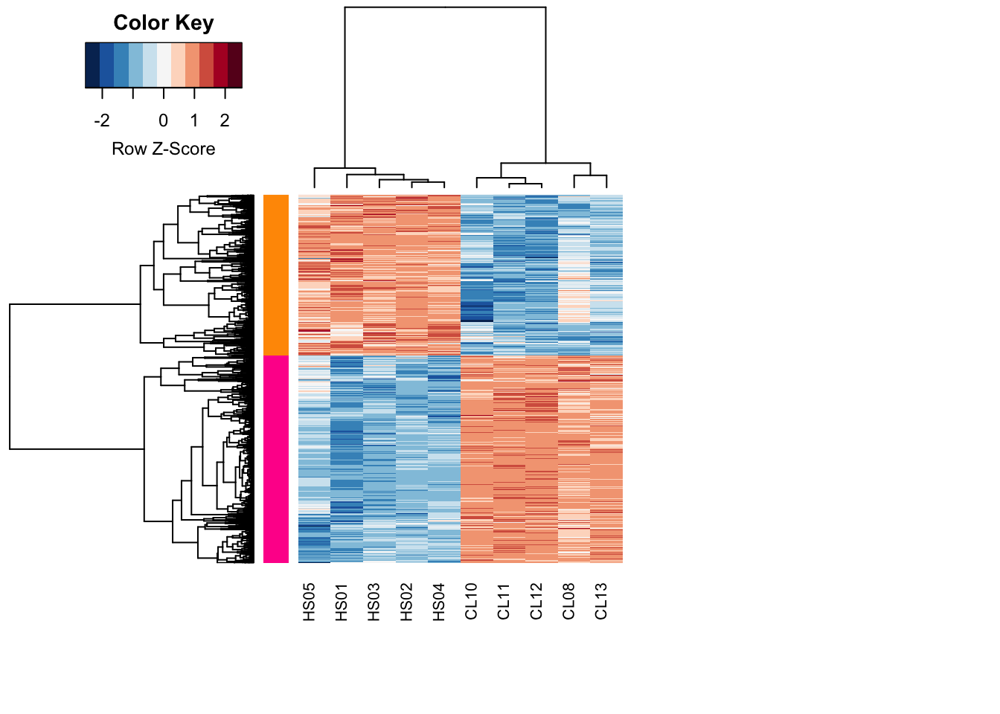
modulePick <- 2
Module_up <- diffGenes[names(module_assign[module_assign %in% modulePick]),]
hrsub_up <- hclust(
as.dist(1 - cor(t(Module_up), method = "pearson")),
method = "complete"
)
heatmap.2(
Module_up,
Rowv=as.dendrogram(hrsub_up),
Colv=NA,
labRow = NA,
col=heatcolors, scale="row",
density.info="none", trace="none",
RowSideColors=module_color[module_assign%in%modulePick], margins=c(8,20)
)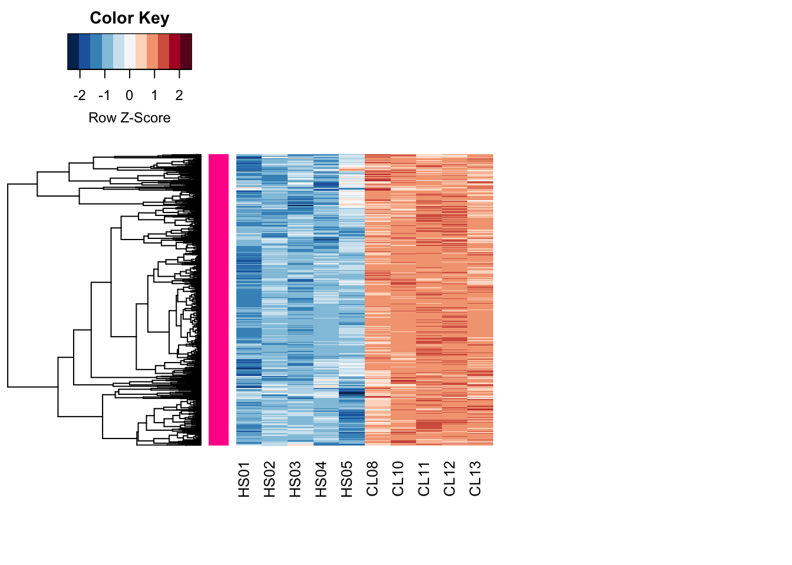
modulePick <- 1
Module_down <- diffGenes[names(module_assign[module_assign %in% modulePick]),]
hrsub_down <- hclust(
as.dist(1 - cor(t(Module_down), method = "pearson")),
method = "complete"
)
heatmap.2(Module_down,
Rowv=as.dendrogram(hrsub_down),
Colv=NA,
labRow = NA,
col=heatcolors, scale="row",
density.info="none", trace="none",
RowSideColors=module_color[module_assign%in%modulePick], margins=c(8,20))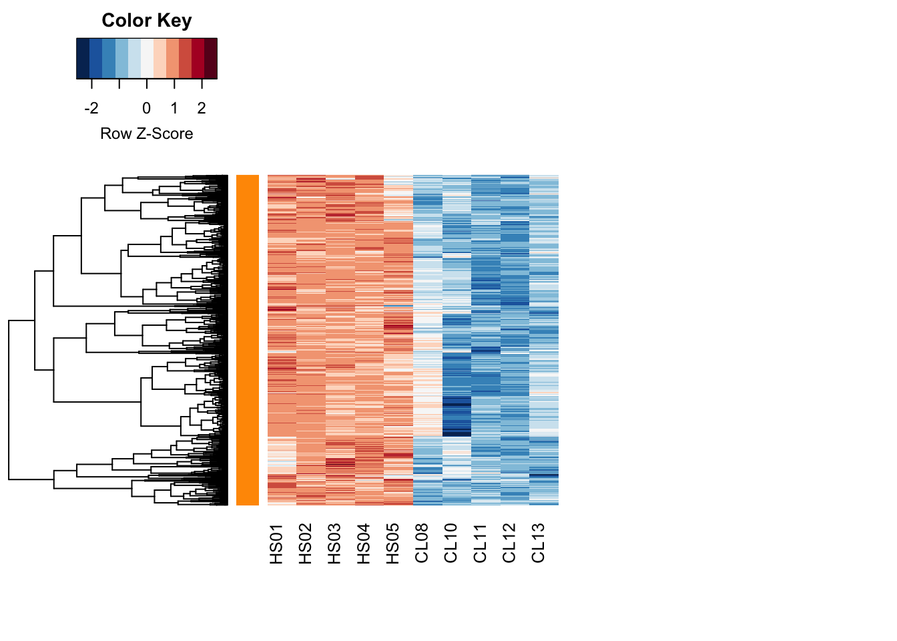
Step8: Functional enrichment analysis
Go enrichment analysis
### carry out GO enrichment using gProfiler2
#### use topTable result to pick the top genes for carrying out a Gene Ontology (GO) enrichment analysis
myTopHits <- topTable(
ebFit,
adjust = "BH",
coef = 1,
number = 50,
sort.by = "logFC"
)
### use the 'gost' function from the gprofiler2 package to run GO enrichment analysis
gost_res <- gost(
rownames(myTopHits),
organism = "hsapiens",
correction_method = "fdr"
)
### produce an interactive manhattan plot of enriched GO terms
gostplot(gost_res, interactive = TRUE, capped = T)
### produce a publication quality static manhattan plot with specific GO terms highlighted
mygostplot <- gostplot(
gost_res,
interactive = FALSE,
capped = TRUE #set interactive=FALSE to get plot for publications
)
### rerun the above gostplot function with 'interactive=F' and save to an object 'mygostplot'
publish_gostplot(
mygostplot, #your static gostplot from above
highlight_terms = c("GO:0034987"),
filename = NULL,
width = NA,
height = NA)
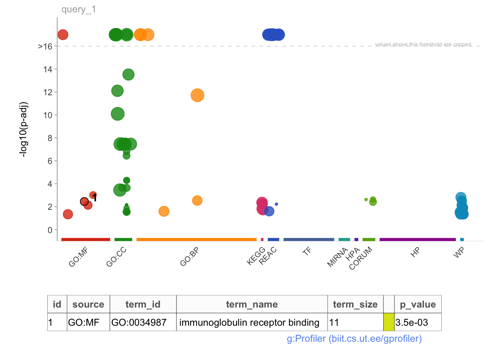
### generate a table of gost results
publish_gosttable(
gost_res,
highlight_terms = NULL,
use_colors = TRUE,
show_columns = c("source", "term_name", "term_size", "intersection_size"),
filename = NULL,
ggplot=TRUE)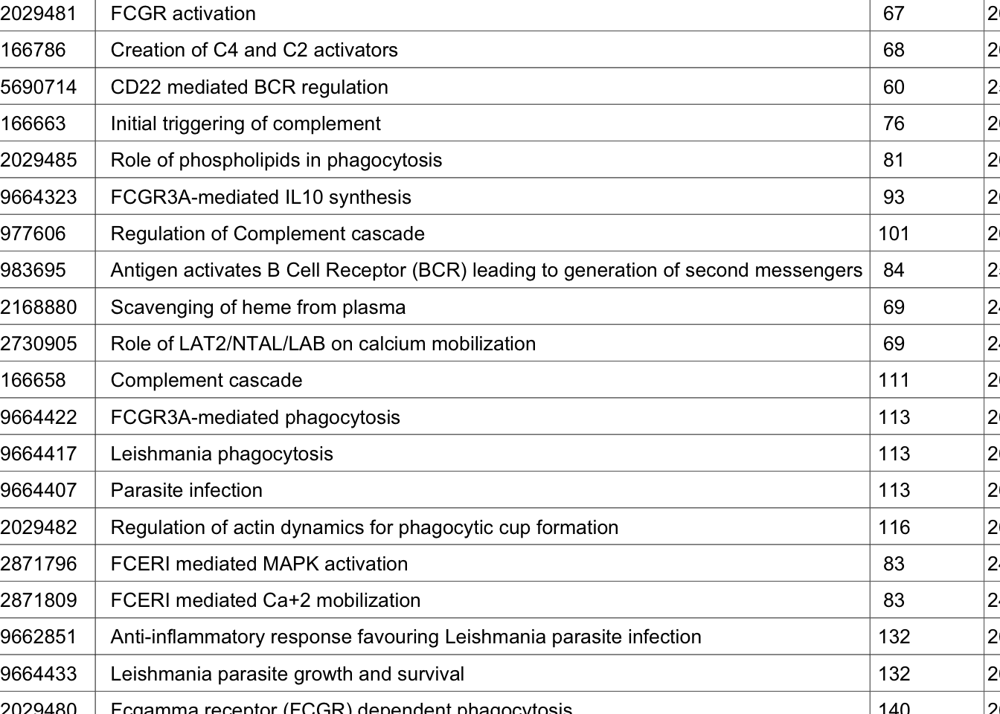
# now repeat the above steps using only genes from a single module from the step 6 script, by using `rownames(myModule)`
# what is value in breaking up DEGs into modules for functional enrichment analysis?Perform GSEA using clusterProfiler
There are a few ways to get msigDB collections into R:
- Option1: download directly from msigdb and load from your computer. can use the ‘read.gmt’ function from clusterProfiler package to create a dataframe. alternatively, you can read in using ‘getGmt’ function from GSEABase package if you need a GeneSetCollection object
c2cp <- read.gmt("/Users/.../MSigDB/c2.cp.v7.1.symbols.gmt")- Option2: use the msigdb package to access up-to-date collections. this option has the additional advantage of providing access to species-specific collections are also retrieved as tibbles
msigdbr_species()
## # A tibble: 20 × 2
## species_name species_common_name
## <chr> <chr>
## 1 Anolis carolinensis Carolina anole, green anole
## 2 Bos taurus bovine, cattle, cow, dairy cow, domestic cat…
## 3 Caenorhabditis elegans <NA>
## 4 Canis lupus familiaris dog, dogs
## 5 Danio rerio leopard danio, zebra danio, zebra fish, zebr…
## 6 Drosophila melanogaster fruit fly
## 7 Equus caballus domestic horse, equine, horse
## 8 Felis catus cat, cats, domestic cat
## 9 Gallus gallus bantam, chicken, chickens, Gallus domesticus
## 10 Homo sapiens human
## 11 Macaca mulatta rhesus macaque, rhesus macaques, Rhesus monk…
## 12 Monodelphis domestica gray short-tailed opossum
## 13 Mus musculus house mouse, mouse
## 14 Ornithorhynchus anatinus duck-billed platypus, duckbill platypus, pla…
## 15 Pan troglodytes chimpanzee
## 16 Rattus norvegicus brown rat, Norway rat, rat, rats
## 17 Saccharomyces cerevisiae baker's yeast, brewer's yeast, S. cerevisiae
## 18 Schizosaccharomyces pombe 972h- <NA>
## 19 Sus scrofa pig, pigs, swine, wild boar
## 20 Xenopus tropicalis tropical clawed frog, western clawed frog
### Gets all collections/signatures with human gene IDs
hs_gsea <- msigdbr(species = "Homo sapiens")
### Take a look at the categories and subcategories of signatures available to you
hs_gsea |>
distinct(gs_cat, gs_subcat) |>
arrange(gs_cat, gs_subcat)
## # A tibble: 23 × 2
## gs_cat gs_subcat
## <chr> <chr>
## 1 C1 ""
## 2 C2 "CGP"
## 3 C2 "CP"
## 4 C2 "CP:BIOCARTA"
## 5 C2 "CP:KEGG"
## 6 C2 "CP:PID"
## 7 C2 "CP:REACTOME"
## 8 C2 "CP:WIKIPATHWAYS"
## 9 C3 "MIR:MIRDB"
## 10 C3 "MIR:MIR_Legacy"
## # ℹ 13 more rows
### Choose a specific msigdb collection/subcollection
hs_gsea_c2 <- msigdbr(
### change depending on species your data came from
species = "Homo sapiens",
category = "C2"
) |>
###just get the columns corresponding to signature name and gene symbols of genes in each signature
select(gs_name, gene_symbol)
### Pull out just the columns corresponding to gene symbols and LogFC for at least one pairwise comparison for the enrichment analysis
mydata_df_sub <- select(mydata_df, geneID, LogFC)
### Construct a named vector
mydata_gsea <- mydata_df_sub$LogFC
names(mydata_gsea) <- as.character(mydata_df_sub$geneID)
mydata_gsea <- sort(mydata_gsea, decreasing = TRUE)
### Run GSEA using the 'GSEA' function from clusterProfiler
myGSEA_res <- GSEA(mydata_gsea, TERM2GENE=hs_gsea_c2, verbose=FALSE)
myGSEA_df <- as_tibble(myGSEA_res@result)
### View results as an interactive table
# datatable(
# myGSEA_df,
# extensions = c('KeyTable', "FixedHeader"),
# caption = 'Signatures enriched in leishmaniasis',
# options = list(
# keys = TRUE,
# searchHighlight = TRUE,
# pageLength = 10,
# lengthMenu = c("10", "25", "50", "100")
# )
# ) |>
# formatRound(columns = c(2:10), digits = 2)
### Create enrichment plots using the enrichplot package
gseaplot2(
myGSEA_res,
### can choose multiple signatures to overlay in this plot
geneSetID = c(6, 47, 262),
### can set this to FALSE for a cleaner plot
pvalue_table = FALSE,
### can also turn off this title
title = myGSEA_res$Description[47]
) 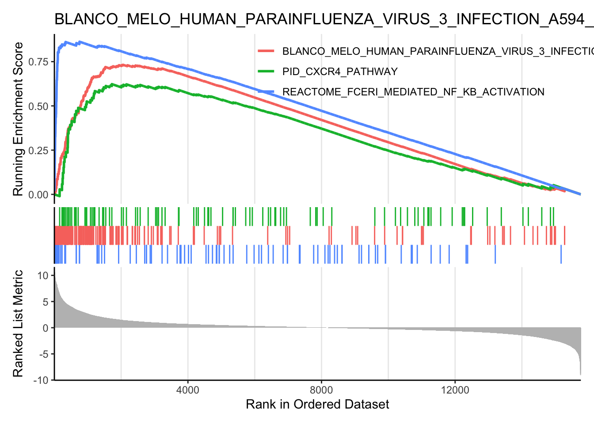
### Add a variable to this result that matches enrichment direction with phenotype
myGSEA_df <- myGSEA_df |>
mutate(
phenotype = case_when(
NES > 0 ~ "disease",
NES < 0 ~ "healthy"
)
)
### Create 'bubble plot' to summarize y signatures across x phenotypes
ggplot(myGSEA_df[1:20,], aes(x=phenotype, y=ID)) +
geom_point(aes(size=setSize, color = NES, alpha=-log10(p.adjust))) +
scale_color_gradient(low="blue", high="red") +
theme_bw()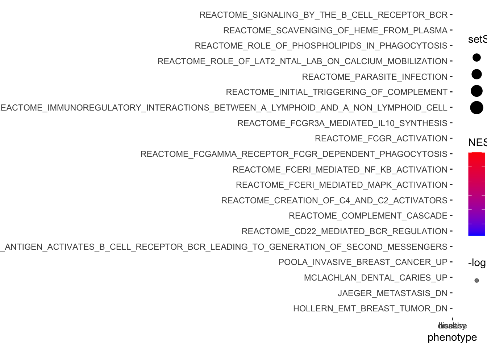
Competitive GSEA using CAMERA
For competitive tests the null hypothesis is that genes in the set are, at most, as often differentially expressed as genes outside the set.
### Create a few signatures to test in our enrichment analysis
### if your own data is from mice, wrap this in 'toupper()' to make gene symbols all caps
mySig <- rownames(myTopHits)
mySig2 <- sample(
(rownames(v_DEGList_filtered_norm$E)),
size = 50, replace = FALSE
)
collection <- list(real = mySig, fake = mySig2)
###Test for enrichment using CAMERA
camera_res <- camera(v_DEGList_filtered_norm$E, collection, design, contrast_matrix[,1])
camera_df <- as_tibble(camera_res, rownames = "setName")
camera_df
## # A tibble: 2 × 5
## setName NGenes Direction PValue FDR
## <chr> <dbl> <chr> <dbl> <dbl>
## 1 real 50 Up 5.85e-20 1.17e-19
## 2 fake 50 Up 9.57e- 1 9.57e- 1Self-contained GSEA using ROAST
For self-contained the null hypothesis is that no genes in the set are differentially expressed.
mroast(
v_DEGList_filtered_norm$E,
collection, design,
#mroast adjusts for multiple testing
contrast=1
)
## NGenes PropDown PropUp Direction PValue FDR PValue.Mixed FDR.Mixed
## real 50 0.06 0.94 Up 5e-04 5e-04 5e-04 5e-04
## fake 50 0.04 0.86 Up 5e-04 5e-04 5e-04 5e-04
### Repeat with an actual gene set collection
### camera requires collections to be presented as a list, rather than a tibble, so we must read in our signatures using the 'getGmt' function
broadSet_C2_ALL <- getGmt(
here("learn", "DIY_Transcriptomics", "data", "c2.all.v7.2.symbols.gmt"),
geneIdType = SymbolIdentifier()
)
### Extract as a list
broadSet_C2_ALL <- geneIds(broadSet_C2_ALL)
camera_res <- camera(
v_DEGList_filtered_norm$E,
broadSet_C2_ALL, design,
contrast_matrix[, 1]
)
camera_df <- as_tibble(camera_res, rownames = "setName")
camera_df
## # A tibble: 6,229 × 5
## setName NGenes Direction PValue FDR
## <chr> <dbl> <chr> <dbl> <dbl>
## 1 MCLACHLAN_DENTAL_CARIES_UP 245 Up 2.80e-33 1.74e-29
## 2 POOLA_INVASIVE_BREAST_CANCER_UP 275 Up 2.59e-32 8.06e-29
## 3 WIELAND_UP_BY_HBV_INFECTION 99 Up 2.10e-31 4.36e-28
## 4 REACTOME_IMMUNOREGULATORY_INTERACTIONS_BE… 158 Up 9.85e-31 1.53e-27
## 5 REACTOME_FCGR_ACTIVATION 62 Up 1.88e-29 2.34e-26
## 6 REACTOME_CD22_MEDIATED_BCR_REGULATION 53 Up 2.62e-27 2.72e-24
## 7 REACTOME_CREATION_OF_C4_AND_C2_ACTIVATORS 58 Up 1.70e-26 1.52e-23
## 8 REACTOME_INITIAL_TRIGGERING_OF_COMPLEMENT 66 Up 2.81e-26 2.19e-23
## 9 WALLACE_PROSTATE_CANCER_RACE_UP 277 Up 6.49e-26 4.49e-23
## 10 FLECHNER_BIOPSY_KIDNEY_TRANSPLANT_REJECTE… 86 Up 4.32e-25 2.69e-22
## # ℹ 6,219 more rows
### Filter based on FDR and display as interactive table
camera_df <- filter(camera_df, FDR<=0.01)
# datatable(
# camera_df,
# extensions = c('KeyTable', "FixedHeader"),
# caption = 'Signatures enriched in leishmaniasis',
# options = list(
# keys = TRUE,
# searchHighlight = TRUE,
# pageLength = 10,
# lengthMenu = c("10", "25", "50", "100")
# )
# ) |>
# formatRound(columns = c(2, 4, 5), digits = 2)
### Add a variable that maps up/down regulated pathways with phenotype
camera_df <- camera_df |>
mutate(
phenotype = case_when(
Direction == "Up" ~ "disease",
Direction == "Down" ~ "healthy"
)
)
### Filtering to return anything that has 'CD8' or 'CYTOTOX' in the name of the signature
camera_df_sub <- camera_df |>
filter(str_detect(setName, "CD8|CYTOTOX"))
### Graph camera results as bubble chart
ggplot(camera_df[1:25,], aes(x=phenotype, y=setName)) +
geom_point(aes(size=NGenes, color = Direction, alpha=-log10(FDR))) +
theme_bw()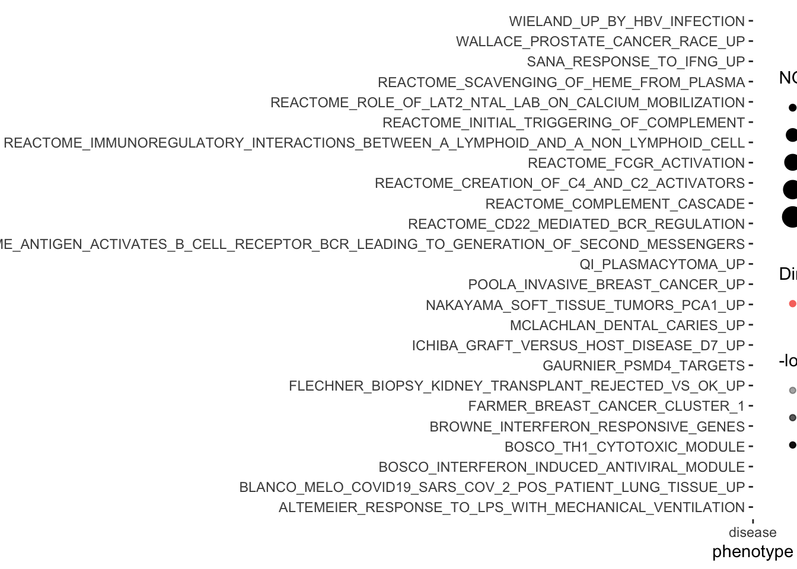
Single sample GSEA using the GSVA package
The GSVA package offers a different way of approaching functional enrichment analysis.
- In contrast to most GSE methods, GSVA performs a change in coordinate systems,transforming the data from a gene by sample matrix to a gene set (signature) by sample matrix. This allows for the evaluation of pathway enrichment for each sample.
- The method is both non-parametric and unsupervised bypasses the conventional approach of explicitly modeling phenotypes within enrichment scoring algorithms.
- Focus is therefore placed on the RELATIVE enrichment of pathways across the sample space rather than the absolute enrichment with respect to a phenotype. However, with data with a moderate to small sample size (< 30), other GSE methods that explicitly include the phenotype in their model are more likely to provide greater statistical power to detect functional enrichment.
# Be aware that if you choose a large MsigDB file here, this step may take a while
GSVA_res_C2CP <- gsva(
v_DEGList_filtered_norm$E,
### signatures
broadSet_C2_ALL,
### criteria for filtering gene sets
min.sz = 5, max.sz = 500,
mx.diff = FALSE,
### options for method are "gsva", ssgsea', "zscore" or "plage"
method = "gsva"
)
## Estimating GSVA scores for 5919 gene sets.
## Estimating ECDFs with Gaussian kernels
##
|
| | 0%
|
| | 1%
|
|= | 1%
|
|= | 2%
|
|== | 2%
|
|== | 3%
|
|== | 4%
|
|=== | 4%
|
|=== | 5%
|
|==== | 5%
|
|==== | 6%
|
|===== | 6%
|
|===== | 7%
|
|===== | 8%
|
|====== | 8%
|
|====== | 9%
|
|======= | 9%
|
|======= | 10%
|
|======= | 11%
|
|======== | 11%
|
|======== | 12%
|
|========= | 12%
|
|========= | 13%
|
|========= | 14%
|
|========== | 14%
|
|========== | 15%
|
|=========== | 15%
|
|=========== | 16%
|
|============ | 16%
|
|============ | 17%
|
|============ | 18%
|
|============= | 18%
|
|============= | 19%
|
|============== | 19%
|
|============== | 20%
|
|============== | 21%
|
|=============== | 21%
|
|=============== | 22%
|
|================ | 22%
|
|================ | 23%
|
|================ | 24%
|
|================= | 24%
|
|================= | 25%
|
|================== | 25%
|
|================== | 26%
|
|=================== | 26%
|
|=================== | 27%
|
|=================== | 28%
|
|==================== | 28%
|
|==================== | 29%
|
|===================== | 29%
|
|===================== | 30%
|
|===================== | 31%
|
|====================== | 31%
|
|====================== | 32%
|
|======================= | 32%
|
|======================= | 33%
|
|======================= | 34%
|
|======================== | 34%
|
|======================== | 35%
|
|========================= | 35%
|
|========================= | 36%
|
|========================== | 36%
|
|========================== | 37%
|
|========================== | 38%
|
|=========================== | 38%
|
|=========================== | 39%
|
|============================ | 39%
|
|============================ | 40%
|
|============================ | 41%
|
|============================= | 41%
|
|============================= | 42%
|
|============================== | 42%
|
|============================== | 43%
|
|============================== | 44%
|
|=============================== | 44%
|
|=============================== | 45%
|
|================================ | 45%
|
|================================ | 46%
|
|================================= | 46%
|
|================================= | 47%
|
|================================= | 48%
|
|================================== | 48%
|
|================================== | 49%
|
|=================================== | 49%
|
|=================================== | 50%
|
|=================================== | 51%
|
|==================================== | 51%
|
|==================================== | 52%
|
|===================================== | 52%
|
|===================================== | 53%
|
|===================================== | 54%
|
|====================================== | 54%
|
|====================================== | 55%
|
|======================================= | 55%
|
|======================================= | 56%
|
|======================================== | 56%
|
|======================================== | 57%
|
|======================================== | 58%
|
|========================================= | 58%
|
|========================================= | 59%
|
|========================================== | 59%
|
|========================================== | 60%
|
|========================================== | 61%
|
|=========================================== | 61%
|
|=========================================== | 62%
|
|============================================ | 62%
|
|============================================ | 63%
|
|============================================ | 64%
|
|============================================= | 64%
|
|============================================= | 65%
|
|============================================== | 65%
|
|============================================== | 66%
|
|=============================================== | 66%
|
|=============================================== | 67%
|
|=============================================== | 68%
|
|================================================ | 68%
|
|================================================ | 69%
|
|================================================= | 69%
|
|================================================= | 70%
|
|================================================= | 71%
|
|================================================== | 71%
|
|================================================== | 72%
|
|=================================================== | 72%
|
|=================================================== | 73%
|
|=================================================== | 74%
|
|==================================================== | 74%
|
|==================================================== | 75%
|
|===================================================== | 75%
|
|===================================================== | 76%
|
|====================================================== | 76%
|
|====================================================== | 77%
|
|====================================================== | 78%
|
|======================================================= | 78%
|
|======================================================= | 79%
|
|======================================================== | 79%
|
|======================================================== | 80%
|
|======================================================== | 81%
|
|========================================================= | 81%
|
|========================================================= | 82%
|
|========================================================== | 82%
|
|========================================================== | 83%
|
|========================================================== | 84%
|
|=========================================================== | 84%
|
|=========================================================== | 85%
|
|============================================================ | 85%
|
|============================================================ | 86%
|
|============================================================= | 86%
|
|============================================================= | 87%
|
|============================================================= | 88%
|
|============================================================== | 88%
|
|============================================================== | 89%
|
|=============================================================== | 89%
|
|=============================================================== | 90%
|
|=============================================================== | 91%
|
|================================================================ | 91%
|
|================================================================ | 92%
|
|================================================================= | 92%
|
|================================================================= | 93%
|
|================================================================= | 94%
|
|================================================================== | 94%
|
|================================================================== | 95%
|
|=================================================================== | 95%
|
|=================================================================== | 96%
|
|==================================================================== | 96%
|
|==================================================================== | 97%
|
|==================================================================== | 98%
|
|===================================================================== | 98%
|
|===================================================================== | 99%
|
|======================================================================| 99%
|
|======================================================================| 100%- Apply linear model to GSVA result. Now using Limma to find significantly enriched gene sets in the same way you did to find diffGenes. This means you’ll be using topTable, decideTests, etc.
- note that you need to reference your design and contrast matrix here.
fit_C2CP <- lmFit(GSVA_res_C2CP, design)
ebfit_C2CP <- eBayes(fit_C2CP)
### Use topTable and decideTests functions to identify the differentially enriched gene sets
topPaths_C2CP <- topTable(ebfit_C2CP, adjust ="BH", coef=1, number=50, sort.by="logFC")
res_C2CP <- decideTests(ebfit_C2CP, method="global", adjust.method="BH", p.value=0.05, lfc=0.58)
### The summary of the decideTests result shows how many sets were enriched in induced and repressed genes in all sample types
summary(res_C2CP)
## disease healthy
## Down 12 42
## NotSig 5851 5864
## Up 56 13
# Pull out the gene sets that are differentially enriched between groups
diffSets_C2CP <- GSVA_res_C2CP[res_C2CP[,1] !=0,]
head(diffSets_C2CP)
## HS01 HS02 HS03
## ST_IL_13_PATHWAY -0.7173858 -0.7147717 -0.7164712
## WATANABE_ULCERATIVE_COLITIS_WITH_CANCER_DN -0.6188325 -0.5710992 -0.4131349
## FARMER_BREAST_CANCER_CLUSTER_1 -0.6886216 -0.5784651 -0.5593251
## BOWIE_RESPONSE_TO_EXTRACELLULAR_MATRIX -0.6707584 -0.5317945 -0.5360570
## BOWIE_RESPONSE_TO_TAMOXIFEN -0.6717424 -0.5377614 -0.5172726
## KAUFFMANN_MELANOMA_RELAPSE_DN 0.5698331 0.7398284 0.6624807
## HS04 HS05 CL08
## ST_IL_13_PATHWAY -0.5968289 -0.4130711 0.8128353
## WATANABE_ULCERATIVE_COLITIS_WITH_CANCER_DN -0.6270975 -0.5185058 0.2930852
## FARMER_BREAST_CANCER_CLUSTER_1 -0.6325020 -0.4714246 0.5083211
## BOWIE_RESPONSE_TO_EXTRACELLULAR_MATRIX -0.6457163 -0.5252770 0.5529664
## BOWIE_RESPONSE_TO_TAMOXIFEN -0.6692727 -0.5128578 0.5408430
## KAUFFMANN_MELANOMA_RELAPSE_DN 0.4426951 0.6730961 -0.6256108
## CL10 CL11 CL12
## ST_IL_13_PATHWAY 0.6256980 0.5670608 0.6341371
## WATANABE_ULCERATIVE_COLITIS_WITH_CANCER_DN 0.5838839 0.6787619 0.7118710
## FARMER_BREAST_CANCER_CLUSTER_1 0.5593513 0.6517882 0.7463300
## BOWIE_RESPONSE_TO_EXTRACELLULAR_MATRIX 0.4914990 0.7723819 0.6409015
## BOWIE_RESPONSE_TO_TAMOXIFEN 0.5064169 0.7568069 0.6405129
## KAUFFMANN_MELANOMA_RELAPSE_DN -0.6277048 -0.6895166 -0.8205882
## CL13
## ST_IL_13_PATHWAY 0.6455147
## WATANABE_ULCERATIVE_COLITIS_WITH_CANCER_DN 0.6389032
## FARMER_BREAST_CANCER_CLUSTER_1 0.5802493
## BOWIE_RESPONSE_TO_EXTRACELLULAR_MATRIX 0.6434423
## BOWIE_RESPONSE_TO_TAMOXIFEN 0.6232986
## KAUFFMANN_MELANOMA_RELAPSE_DN -0.3907835
dim(diffSets_C2CP)
## [1] 68 10
### Make a heatmap of differentially enriched gene sets
hr_C2CP <- hclust(
as.dist(1 - cor(t(diffSets_C2CP), method = "pearson")),
### cluster rows by pearson correlation
method = "complete"
)
hc_C2CP <- hclust(
as.dist(1 - cor(diffSets_C2CP, method = "spearman")),
### cluster columns by spearman correlation
method = "complete"
)
### Cut the resulting tree and create color vector for clusters. Vary the cut height to give more or fewer clusters, or you the 'k' argument to force n number of clusters
mycl_C2CP <- cutree(hr_C2CP, k=2)
mycolhc_C2CP <- rainbow(
length(unique(mycl_C2CP)),
start = 0.1, end = 0.9
)
mycolhc_C2CP <- mycolhc_C2CP[as.vector(mycl_C2CP)]
### assign your favorite heatmap color scheme. Some useful examples: colorpanel(40, "darkblue", "yellow", "white"); heat.colors(75); cm.colors(75); rainbow(75); redgreen(75); library(RColorBrewer); rev(brewer.pal(9,"Blues")[-1]). Type demo.col(20) to see more color schemes.
myheatcol <- colorRampPalette(colors=c("yellow","white","blue"))(100)
### Plot the hclust results as a heatmap
heatmap.2(
diffSets_C2CP,
Rowv = as.dendrogram(hr_C2CP),
Colv = as.dendrogram(hc_C2CP),
col = myheatcol, scale = "row",
density.info = "none", trace = "none",
### Creates heatmap for entire data set where the obtained clusters are indicated in the color bar.
cexRow = 0.9, cexCol = 1, margins = c(10, 14)
) 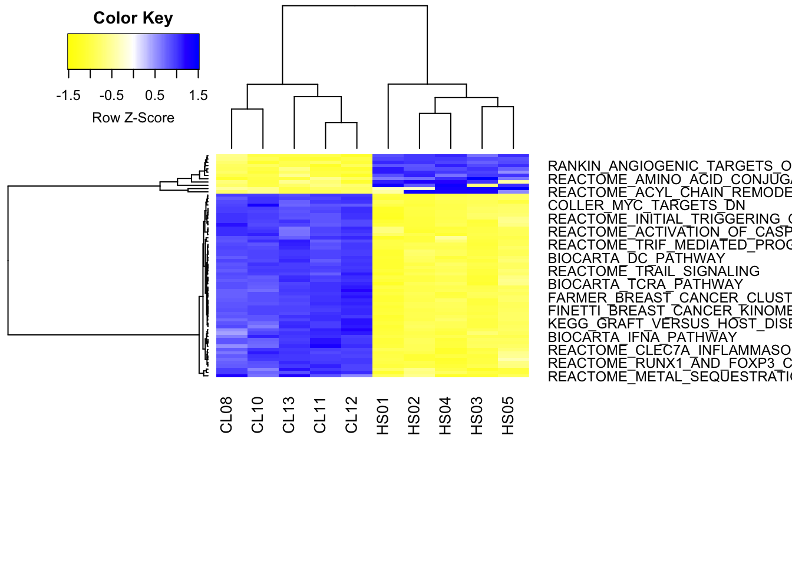
Reference
SessionInfo
sessionInfo()
## R version 4.3.1 (2023-06-16)
## Platform: aarch64-apple-darwin20 (64-bit)
## Running under: macOS Sonoma 14.1.1
##
## Matrix products: default
## BLAS: /Library/Frameworks/R.framework/Versions/4.3-arm64/Resources/lib/libRblas.0.dylib
## LAPACK: /Library/Frameworks/R.framework/Versions/4.3-arm64/Resources/lib/libRlapack.dylib; LAPACK version 3.11.0
##
## locale:
## [1] en_US.UTF-8/en_US.UTF-8/en_US.UTF-8/C/en_US.UTF-8/en_US.UTF-8
##
## time zone: Asia/Singapore
## tzcode source: internal
##
## attached base packages:
## [1] stats4 stats graphics grDevices utils datasets methods
## [8] base
##
## other attached packages:
## [1] enrichplot_1.20.0 msigdbr_7.5.1
## [3] clusterProfiler_4.8.2 gprofiler2_0.2.2
## [5] GSVA_1.48.3 GSEABase_1.62.0
## [7] graph_1.78.0 annotate_1.80.0
## [9] XML_3.99-0.15 gplots_3.1.3
## [11] heatmaply_1.5.0 viridis_0.6.4
## [13] viridisLite_0.4.2 RColorBrewer_1.1-3
## [15] gt_0.10.0 plotly_4.10.3
## [17] DT_0.30 cowplot_1.1.1
## [19] matrixStats_1.1.0 edgeR_4.0.1
## [21] limma_3.58.1 datapasta_3.1.0
## [23] here_1.0.1 EnsDb.Hsapiens.v86_2.99.0
## [25] ensembldb_2.24.1 AnnotationFilter_1.24.0
## [27] GenomicFeatures_1.52.2 AnnotationDbi_1.64.1
## [29] Biobase_2.62.0 GenomicRanges_1.52.1
## [31] GenomeInfoDb_1.38.0 IRanges_2.36.0
## [33] S4Vectors_0.40.1 BiocGenerics_0.48.1
## [35] tximport_1.28.0 lubridate_1.9.3
## [37] forcats_1.0.0 stringr_1.5.1
## [39] dplyr_1.1.4 purrr_1.0.2
## [41] readr_2.1.4 tidyr_1.3.0
## [43] tibble_3.2.1 ggplot2_3.4.4
## [45] tidyverse_2.0.0 rhdf5_2.44.0
##
## loaded via a namespace (and not attached):
## [1] fs_1.6.3 ProtGenerics_1.32.0
## [3] bitops_1.0-7 HDO.db_0.99.1
## [5] httr_1.4.7 webshot_0.5.5
## [7] tools_4.3.1 utf8_1.2.4
## [9] R6_2.5.1 HDF5Array_1.28.1
## [11] mgcv_1.9-0 lazyeval_0.2.2
## [13] rhdf5filters_1.12.1 withr_2.5.2
## [15] prettyunits_1.2.0 gridExtra_2.3
## [17] cli_3.6.1 TSP_1.2-4
## [19] scatterpie_0.2.1 sass_0.4.7
## [21] labeling_0.4.3 commonmark_1.9.0
## [23] Rsamtools_2.16.0 yulab.utils_0.1.0
## [25] gson_0.1.0 DOSE_3.26.2
## [27] RSQLite_2.3.3 generics_0.1.3
## [29] gridGraphics_0.5-1 BiocIO_1.10.0
## [31] crosstalk_1.2.0 vroom_1.6.4
## [33] gtools_3.9.5 dendextend_1.17.1
## [35] GO.db_3.17.0 Matrix_1.6-3
## [37] fansi_1.0.5 abind_1.4-5
## [39] lifecycle_1.0.4 yaml_2.3.7
## [41] SummarizedExperiment_1.30.2 qvalue_2.32.0
## [43] BiocFileCache_2.8.0 grid_4.3.1
## [45] blob_1.2.4 promises_1.2.1
## [47] crayon_1.5.2 lattice_0.22-5
## [49] beachmat_2.16.0 KEGGREST_1.42.0
## [51] pillar_1.9.0 knitr_1.45
## [53] fgsea_1.26.0 rjson_0.2.21
## [55] codetools_0.2-19 fastmatch_1.1-4
## [57] glue_1.6.2 downloader_0.4
## [59] ggfun_0.1.3 data.table_1.14.8
## [61] vctrs_0.6.4 png_0.1-8
## [63] treeio_1.24.3 gtable_0.3.4
## [65] assertthat_0.2.1 cachem_1.0.8
## [67] xfun_0.41 mime_0.12
## [69] S4Arrays_1.0.6 tidygraph_1.2.3
## [71] SingleCellExperiment_1.22.0 seriation_1.4.2
## [73] iterators_1.0.14 statmod_1.5.0
## [75] ellipsis_0.3.2 nlme_3.1-163
## [77] ggtree_3.8.2 bit64_4.0.5
## [79] progress_1.2.2 filelock_1.0.2
## [81] rprojroot_2.0.4 irlba_2.3.5.1
## [83] KernSmooth_2.23-22 colorspace_2.1-0
## [85] DBI_1.1.3 tidyselect_1.2.0
## [87] bit_4.0.5 compiler_4.3.1
## [89] curl_5.1.0 xml2_1.3.5
## [91] DelayedArray_0.26.7 shadowtext_0.1.2
## [93] rtracklayer_1.60.1 scales_1.2.1
## [95] caTools_1.18.2 hexbin_1.28.3
## [97] rappdirs_0.3.3 digest_0.6.33
## [99] rmarkdown_2.25 ca_0.71.1
## [101] XVector_0.42.0 htmltools_0.5.7
## [103] pkgconfig_2.0.3 sparseMatrixStats_1.12.2
## [105] MatrixGenerics_1.14.0 dbplyr_2.4.0
## [107] fastmap_1.1.1 rlang_1.1.2
## [109] htmlwidgets_1.6.2 shiny_1.8.0
## [111] DelayedMatrixStats_1.22.6 farver_2.1.1
## [113] jsonlite_1.8.7 BiocParallel_1.36.0
## [115] GOSemSim_2.26.1 BiocSingular_1.16.0
## [117] RCurl_1.98-1.13 magrittr_2.0.3
## [119] GenomeInfoDbData_1.2.11 ggplotify_0.1.2
## [121] patchwork_1.1.3 Rhdf5lib_1.22.1
## [123] munsell_0.5.0 Rcpp_1.0.11
## [125] ape_5.7-1 babelgene_22.9
## [127] stringi_1.8.1 ggraph_2.1.0
## [129] zlibbioc_1.48.0 MASS_7.3-60
## [131] plyr_1.8.9 parallel_4.3.1
## [133] ggrepel_0.9.4 Biostrings_2.70.1
## [135] graphlayouts_1.0.2 splines_4.3.1
## [137] hms_1.1.3 locfit_1.5-9.8
## [139] igraph_1.5.1 markdown_1.11
## [141] reshape2_1.4.4 biomaRt_2.56.1
## [143] ScaledMatrix_1.8.1 evaluate_0.23
## [145] httpuv_1.6.12 tzdb_0.4.0
## [147] foreach_1.5.2 tweenr_2.0.2
## [149] polyclip_1.10-6 ggforce_0.4.1
## [151] rsvd_1.0.5 xtable_1.8-4
## [153] restfulr_0.0.15 tidytree_0.4.5
## [155] later_1.3.1 aplot_0.2.2
## [157] memoise_2.0.1 registry_0.5-1
## [159] GenomicAlignments_1.36.0 timechange_0.2.0